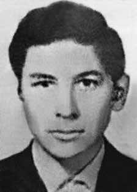

Marco
Antônio
Dias
Baptista
CIRCUNSTÂNCIAS DA MORTE
Marco Antônio Dias Baptista tinha apenas 15 anos de idade quando desapareceu por volta do mês de maio de 1970. Mais de quatro décadas depois, ainda não é possível saber como se desdobraram os fatos que culminaram em seu desaparecimento. De acordo com informações apresentadas no livro-relatório da Comissão Especial sobre Mortos e Desaparecidos Políticos (CEMDP), as pesquisas inicialmente conduzidas com o intuito de esclarecer o desaparecimento de Marco Antônio indicavam que ele fora visto pela última vez em Porto Nacional, atualmente estado de Tocantins, por volta de março ou abril de 1970. De acordo com esse relato, o militante Allan Kardec Pimentel foi quem viu Marco Antônio pela última vez durante viagem a Porto Nacional. Em depoimento transcrito no livro Desaparecidos políticos, Kardec declara que: […] Nos primeiros meses de 1970, a maioria dos militantes da VARPalmares, em Goiás, caiu nas mãos da repressão. Eu fui preso quando voltava do Rio de janeiro, pois não consegui sair do país. […] Todo o pessoal de Goiás foi preso, mas o Marcos não apareceu. E não tivemos mais notícias dele.ii No início da década de 1980, por intermédio de pesquisas diretamente realizadas por Maria de Campos Baptista, mãe de Marco Antônio, veio à tona uma nova versão para o caso. De acordo com o médico Laerte Chediac, irmão de Ibrahim Chediac, ex-delegado da Secretaria de Segurança Pública de Goiás, Marco Antônio fora preso em maio de 1970 pela equipe do capitão Marcus Fleury. Na versão contada pelo médico, Marco teria solicitado o direito de visitar sua família e, ao receber permissão para isso, teria tentado fugir e provavelmente sido morto. Apenas um jornal publicou o conteúdo do diálogo entre Maria de Campos Baptista e Laerte Chediac. A matéria “Fleury sequestrou Marco”, de autoria do jornalista Francisco Messias, foi veiculada na edição nº 13, ano I, dias 1º a 17 de maio de 1980, do jornal Tribuna Operáriaiii . Apesar de o capitão Marcus Antônio Brito de Fleury ocupar, à época, o posto de oficial do Exército no 10º Batalhão de Caçadores, em Goiânia, e de ser o responsável pela Superintendência Regional da Polícia Federal em Goiás, não foram encontrados outros elementos suficientes para comprovar a versão narrada por Laerte Chediac. Marcus Fleury, um dos mais violentos agentes da ditadura militar no estado de Goiás, foi também chefe da Agência de Goiânia do Serviço Nacional de Informações, o que comprova seu trânsito e sua influência em diferentes estruturas da repressão em Goiás. Em 1993, em resposta ao pedido apresentado pelo Ministério da Justiça de documentação disponível sobre o caso de Marco Antônio Dias Baptista, o relatório apresentado pelo Ministério da Marinha informa apenas que Marco Antônio era “líder secundarista goiano, preso e desaparecido em 1970”iv . Em 18 de outubro de 2013, a Comissão Nacional da Verdade realizou audiência pública na sede do Sindicato dos Jornalistas no Estado de Goiás. Na oportunidade, colheu o depoimento de dois irmãos de Marco Antonio Dias Batista, Silvino Antônio Dias Baptista e Renato Dias. As buscas realizadas pela CNV em livros de registro de cemitérios em Goiânia e nos fundos documentais do Arquivo Nacional não apresentaram novos resultados relevantes para o caso.
Marco Antônio Dias Baptista was just 15 years old when he disappeared around May 1970. More than four decades later, it is still not possible to know how the events that culminated in his disappearance unfolded. According to information presented in the report book of the Special Commission on Political Deaths and Disappearances (CEMDP), research initially conducted with the aim of clarifying Marco Antônio's disappearance indicated that he was last seen in Porto Nacional, currently the state of Tocantins, around March or April 1970. According to this report, the militant Allan Kardec Pimentel was the one who saw Marco Antônio for the last time during his trip to Porto Nacional. In a statement transcribed in the book Disappeared politicians, Kardec declares that: […] In the first months of 1970, the majority of VARPalmares activists, in Goiás, fell into the hands of repression. I was arrested when I returned from Rio de Janeiro, because I couldn't leave the country. […] All the people from Goiás were arrested, but Marcos didn’t show up. And we never heard from him again.ii At the beginning of the 1980s, through research directly carried out by Maria de Campos Baptista, mother of Marco Antônio, a new version of the case came to light. According to doctor Laerte Chediac, brother of Ibrahim Chediac, former delegate of the Public Security Secretariat of Goiás, Marco Antônio was arrested in May 1970 by captain Marcus Fleury's team. In the version told by the doctor, Marco would have requested the right to visit his family and, upon receiving permission to do so, would have tried to escape and probably been killed. Only one newspaper published the content of the dialogue between Maria de Campos Baptista and Laerte Chediac. The article “Fleury kidnapped Marco”, written by journalist Francisco Messias, was published in issue no. 13, year I, May 1st to 17th, 1980, of the newspaper Tribuna Operáriaiii. Despite the fact that Captain Marcus Antônio Brito de Fleury held, at the time, the position of Army officer in the 10th Battalion of Hunters, in Goiânia, and was responsible for the Regional Superintendence of the Federal Police in Goiás, no other elements were found sufficient to prove the version narrated by Laerte Chediac. Marcus Fleury, one of the most violent agents of the military dictatorship in the state of Goiás, was also head of the Goiânia Agency of the National Information Service, which proves his transit and influence in different structures of repression in Goiás. In 1993, in response to the request presented by the Ministry of Justice for available documentation on the case of Marco Antônio Dias Baptista, the report presented by the Ministry of the Navy states only that Marco Antônio was “a high school leader from Goiás, arrested and disappeared in 1970”iv. On October 18, 2013, the National Truth Commission held a public hearing at the headquarters of the Journalists Union in the State of Goiás. On that occasion, it took the testimony of two brothers of Marco Antonio Dias Batista, Silvino Antônio Dias Baptista and Renato Dias. The searches carried out by the CNV in cemetery registration books in Goiânia and in the documentary funds of the National Archive did not produce new results relevant to the case.
Marco Antônio Dias Baptista tenía apenas 15 años cuando desapareció alrededor de mayo de 1970. Más de cuatro décadas después, aún no es posible saber cómo se desarrollaron los acontecimientos que culminaron con su desaparición. Según informaciones presentadas en el libro de informes de la Comisión Especial sobre Muertes y Desapariciones Políticas (CEMDP), las investigaciones realizadas inicialmente con el objetivo de esclarecer la desaparición de Marco Antônio indicaron que fue visto por última vez en Porto Nacional, actual estado de Tocantins, alrededor de marzo o abril de 1970. Según este informe, el militante Allan Kardec Pimentel fue quien vio a Marco Antônio por última vez durante su viaje a Porto Nacional. En una declaración transcrita en el libro Políticos desaparecidos, Kardec declara que: […] En los primeros meses de 1970, la mayoría de los militantes del VARPalmares, en Goiás, cayeron en manos de la represión. Me arrestaron cuando regresé de Río de Janeiro porque no podía salir del país. […] Toda la gente de Goiás fue arrestada, pero Marcos no apareció. Y nunca más volvimos a saber de él.ii A principios de los años 1980, a través de una investigación realizada directamente por Maria de Campos Baptista, madre de Marco Antônio, salió a la luz una nueva versión del caso. Según el médico Laerte Chediac, hermano de Ibrahim Chediac, ex delegado de la Secretaría de Seguridad Pública de Goiás, Marco Antônio fue detenido en mayo de 1970 por el equipo del capitán Marcus Fleury. En la versión contada por el médico, Marco habría solicitado el derecho a visitar a su familia y, al recibir permiso para hacerlo, habría intentado escapar y probablemente sería asesinado. Sólo un periódico publicó el contenido del diálogo entre María de Campos Baptista y Laerte Chediac. El artículo “Fleury secuestró a Marco”, escrito por el periodista Francisco Messias, fue publicado en el número 1. 13, año I, del 1 al 17 de mayo de 1980, del diario Tribuna Operáriaiii. A pesar de que el Capitán Marcus Antônio Brito de Fleury desempeñaba, en ese momento, el cargo de oficial del Ejército en el 10º Batallón de Cazadores, en Goiânia, y era responsable de la Superintendencia Regional de la Policía Federal en Goiás, no se encontraron otros elementos suficientes para probar la versión narrada por Laerte Chediac. Marcus Fleury, uno de los agentes más violentos de la dictadura militar en el estado de Goiás, también fue jefe de la Agencia Goiânia del Servicio Nacional de Información, lo que prueba su tránsito e influencia en diferentes estructuras de represión en Goiás. En 1993, en respuesta a la solicitud presentada por el Ministerio de Justicia para disponer de documentación sobre el caso de Marco Antônio Dias Baptista, el informe presentado por el Ministerio de Marina sólo afirma que Marco Antônio era “un dirigente de secundaria de Goiás, detenido y desaparecido en 1970”iv. El 18 de octubre de 2013, la Comisión Nacional de la Verdad realizó una audiencia pública en la sede del Sindicato de Periodistas en el Estado de Goiás. En esa ocasión, se tomó el testimonio de dos hermanos de Marco Antonio Dias Batista, Silvino Antônio Dias Baptista y Renato Dias. Las búsquedas realizadas por la CNV en los libros de registro de cementerios de Goiânia y en los fondos documentales del Archivo Nacional no arrojaron nuevos resultados relevantes para el caso.